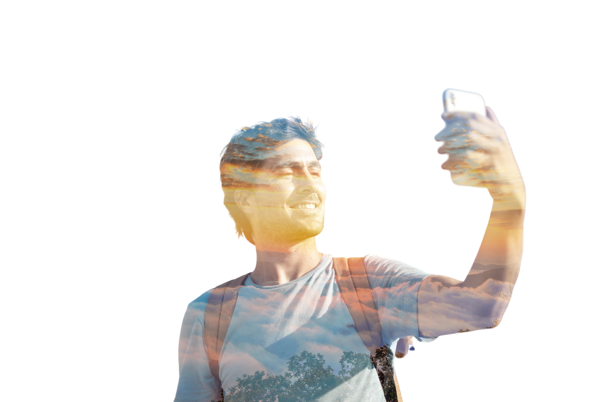
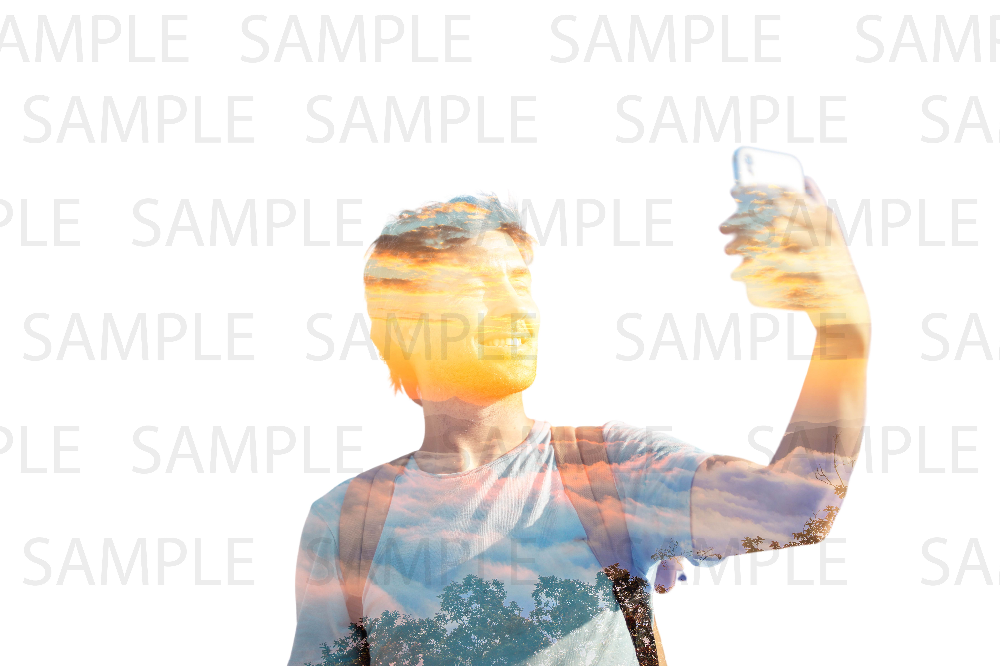

A07: Apply Background
把背景圖 2.jpg 套用到人物照 1.jpg 上，輸出 result.jpg（不可直接用 sample.jpg）。
成品

成品：人物 × 夕陽雲海

題目提供的參考範例（含 SAMPLE 浮水印）
製作方式
- 1.jpg 是白底人物照，用亮度門檻取出人物遮罩，取最大連通區域後泛洪填滿內部空洞。
- 2.jpg 的夕陽雲海等比例縮放並置中裁切成人物外接矩形大小。
- 以濾色（screen）混合把夕陽疊進人物輪廓內：亮部保留夕陽色調，暗部保留人物輪廓。
- 用羽化後的遮罩把結果疊在白色底上輸出 result.jpg。
產生成品的完整程式：build.py（Python + OpenCV）
使用素材
1.jpg：白底人物照2.jpg：夕陽雲海背景sample.jpg：題目提供的參考成品